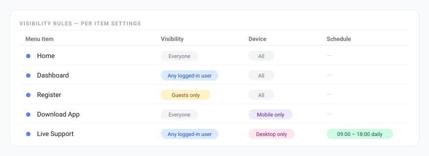

Visibility Rules
Show or hide individual menu items based on who is viewing the site, what device they are on, when they are visiting, or whether they are logged in.

How visibility rules work
Each menu item has its own set of visibility rules. Rules are configured inside Menu Builder → Menu Structure — click any item in the list to expand its options and look for the Visibility dropdown and the Advanced conditions section.
By default, all items are visible to everyone. As soon as you set a rule, the item is only shown to visitors that match that condition. Multiple rule types are combined with AND logic — all enabled rules must match for the item to appear.
Visibility dropdown (role & login)
Each item has a single Visibility dropdown where you pick one of the following:
| Option | Description |
|---|---|
| Everyone | Default. No restriction — the item is shown to all visitors. |
| Any logged-in user | Visible only to users who are logged in (any role). |
| Guests only (not logged in) | Visible only to visitors who are not logged in. Useful for “Login” / “Register” links. |
| [Role] only | Visible only to users with that exact role — e.g. “Administrator only”, “Editor only”, “Customer only”. You pick one role from the list. |
Custom roles added by other plugins (e.g. WooCommerce’s “Shop Manager” or “Customer”) appear in the dropdown automatically. To target several roles at once, use the Roles field in the Advanced conditions instead (enter a comma-separated list, e.g. editor,author — the item shows only to users who have one of those roles).
Device
In the Advanced conditions, show or hide an item based on the visitor’s device type:
- All devices — default.
- Mobile only — shown only on phones/tablets, hidden on desktop.
- Desktop only — shown only on desktop, hidden on mobile.
Device detection is performed server-side on page load using WordPress’s wp_is_mobile() function. Unlike CSS media queries, this means the correct HTML is sent to the browser — not just hidden with CSS — which avoids content flashing. Note that wp_is_mobile() treats tablets as mobile devices.
Schedule & time
Two independent scheduling controls are available in the Advanced conditions.
Date range
Set a Start date/time and/or End date/time. The item is only visible between those moments (inclusive). Leave either field empty for an open-ended range — useful for scheduling a promotional link to appear and disappear automatically.
Daily time window
Set a From and To time (HH:MM). The item is only visible during that window each day. Example: show a “Live support” link only between 09:00 and 18:00.
Schedule rules use your WordPress site’s timezone (set under Settings → General → Timezone), not the visitor’s local time.
Privacy. All visibility rules — role, login state, device and UTM source — are evaluated on your own WordPress server when the page is built. The plugin reads only the current request (for example the utm_source in the page URL); it does not store, log, or send any visitor data to third parties.
Page & campaign targeting
Two more conditions round out the Advanced section:
- Pages — restrict the item to specific pages by entering their page IDs (comma-separated).
- UTM source — show the item only when the visitor arrives with a matching
utm_sourcequery parameter. Useful for tailoring the menu to a specific marketing campaign.
Combining rules
All active rules must match simultaneously (AND logic). For example, to show a menu item only to logged-in users on desktop during business hours:
- Visibility dropdown → Any logged-in user
- Device → Desktop only
- Daily time window → 09:00–18:00